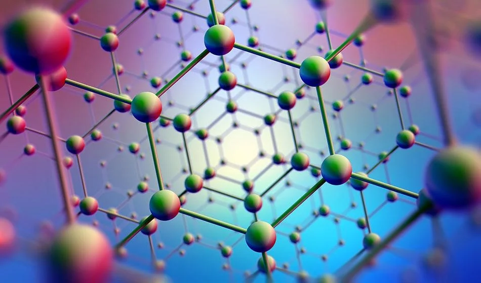

Materials Engineering
Materials science is an interdisciplinary field of researching and discovering materials.Materials engineering is an engineering field of finding uses for materials in other fields and industries.
The intellectual origins of materials science stem from the Age of Enlightenment,when researchers began to use analytical thinking from chemistry, physics, and engineering to understand ancient, phenomenological observations in metallurgy and mineralogy.
Materials science still incorporates elements lof physics, chemistry, and engineering.As such, the field was long considered by academic institutions as a sub-field of these related fields.Beginning in the 1940s, materials science began to be more widely recognized as a specific and distinct field of science and engineering, and major technical universities around the world created dedicated schools for its study.
Materials scientists emphasize understanding how the history of a material(processing) influences its structure, and thus the material's properties and performance. The understanding of processing-structure-properties-relationships is called the materials paradigm. This paradigm is used to advance understanding in a variety of research areas, including nanotechnology, biomaterials, and metallurgy.Materials science is also an important part of forensic engineering and failure analysis-investigating materials, products, structures or components, which fail or do not function as intended, causing personal injury or damage to property. Such investigations are key to understanding, for example, the causes of various aviation accidents and incidents.
A late Bronze Age sword or dagger blade
The material of choice of a given era is often a defining point.Phases such as Stone Age, Bronze Age, Iron Age, and Steel Age are historic,if arbitrary examples. Originally deriving from the manufacture of ceramics and its putative derivative metallurgy, materials science is one of the oldest forms of engineering and applied science.Modern materials science evolved directly from metallurgy, which itself evolved from the use of fire.
A major breakthrough in the understanding of materials occurred in the late 19th century, when the American scientist Josiah Willard Gibbs demonstrated that the thermodynamic properties related to atomic structure in various phases are related to the physical properties of a material.Important elements of modern materials science were products of the Space Race; the understanding and engineering of the metallic alloys, and silica and carbon materials, used in building space vehicles enabling the exploration of space. Materials science has driven, and been driven by, the development of revolutionary technologies such as rubbers, plastics, semiconductors, and biomaterials.
Before the 1960s (and in some cases decades after), many eventual materials science departments were metallurgy or ceramics engineering departments, reflecting the 19th and early 20th-century emphasis on metals and ceramics. The growth of materials science in the United States was catalyzed in part by the Advanced Research Projects Agency, which funded a series of university-hosted laboratories in the early 1960s, "to expand the national program of basic research and training in the materials sciences."
In comparison with mechanical engineering, the nascent material science field focused on addressing materials from the macro-level and on the approach that materials are designed on the basis of knowledge of behavior at the microscopic level.Due to the expanded knowledge of the link between atomic and molecular processes as well as the overall properties of materials, the design of materials came to be based on specific desired properties. The materials science field has since broadened to include every class of materials, including ceramics, polymers, semiconductors, magnetic materials, biomaterials, and nanomaterials, generally classified into three distinct groups: ceramics, metals, and polymers. The prominent change in materials science during the recent decades is active usage of computer simulations to find new materials, predict properties and understand phenomena.
The materials paradigm represented in the form of a tetrahedron
A material is defined as a substance (most often a solid, but other condensed phases can be included) that is intended to be used for certain applications. There are a myriad of materials around us; they can be found in anything from buildings and cars to spacecraft. The main classes of materials are metals, semiconductors, ceramics and polymers. New and advanced materials that are being developed include nanomaterials, biomaterials, and energy materials to name a few.
The basis of materials science is studying the interplay between the structure of materials, the processing methods to make that material, and the resulting material properties.The complex combination of these produce the performance of a material in a specific application. Many features across many length scales impact material performance, from the constituent chemical elements, its microstructure, and macroscopic features from processing. Together with the laws of thermodynamics and kinetics materials scientists aim to understand and improve materials .
Structure
Structure is one of the most important components of the field of materials science.The very definition of the field holds that it is concerned with the investigation of "the relationships that exist between the structures and properties of materials". Materials science examines the structure of materials from the atomic scale, all the way up to the macro-scale. Characterization is the way materials scientists examine the structure of a material. This involves methods such as diffraction with X-rays, electrons or neutrons, and various forms of spectroscopy and chemical analysis such as Raman spectroscopy, energy-dispersive spectroscopy, chromatography, thermal analysis, electron microscope analysis, etc.
Structure is studied in the following levels.
Atomic structure
Atomic structure deals with the atoms of the materials, and how they are arranged to give rise to molecules, crystals, etc. Much of the electrical, magnetic and chemical properties of materials arise from this level of structure. The length scales involved are in angstroms Ã…. The chemical bonding and atomic arrangement (crystallography) are fundamental to studying the properties and behavior of any material. To obtain a full understanding of the material structure and how it relates to its properties, the materials scientist must study how the different atoms, ions and molecules are arranged and bonded to each other. This involves the study and use of quantum chemistry or quantum physics. Solid-state physics, solid-state chemistry and physical chemistry are also involved in the study of bonding and structure.
Crystallography
Crystallography is the science that examines the arrangement of atoms in crystalline solids. Crystallography is a useful tool for materials scientists. In single crystals, the effects of the crystalline arrangement of atoms is often easy to see macroscopically, because the natural shapes of crystals reflect the atomic structure. Further, physical properties are often controlled by crystalline defects. The understanding of crystal structures is an important prerequisite for understanding crystallographic defects. Mostly, materials do not occur as a single crystal, but in polycrystalline form, as an aggregate of small crystals or grains with different orientations. Because of this, the powder diffraction method, which uses diffraction patterns of polycrystalline samples with a large number of crystals, plays an important role in structural determination. Most materials have a crystalline structure, but some important materials do not exhibit regular crystal structure. Polymers display varying degrees of crystallinity, and many are completely non-crystalline. Glass, some ceramics, and many natural materials are amorphous, not possessing any long-range order in their atomic arrangements.The study of polymers combines elements of chemical and statistical thermodynamics to give thermodynamic and mechanical descriptions of physical properties.
Nanostructure
Nanomaterials are subject of intense research in the materials science community due to the unique properties that they exhibit.
Nanostructure deals with objects and structures that are in the 1-100 nm range.In many materials, atoms or molecules agglomerate together to form objects at the nanoscale. This causes many interesting electrical, magnetic, optical, and mechanical properties.
In describing nanostructures, it is necessary to differentiate between the number of dimensions on the nanoscale.
Nanotextured surfaces have one dimension on the nanoscale, i.e., only the thickness of the surface of an object is between 0.1 and 100 nm.
Nanotubes have two dimensions on the nanoscale, i.e., the diameter of the tube is between 0.1 and 100 nm; its length could be much greater.
Finally, spherical nanoparticles have three dimensions on the nanoscale, i.e., the particle is between 0.1 and 100 nm in each spatial dimension. The terms nanoparticles and ultrafine particles (UFP) often are used synonymously although UFP can reach into the micrometre range. The term 'nanostructure' is often used, when referring to magnetic technology. Nanoscale structure in biology is often called ultrastructure.
Microstructure
Microstructure is defined as the structure of a prepared surface or thin foil of material as revealed by a microscope above 25times magnification. It deals with objects from 100nm to a few cm. The microstructure of a material (which can be broadly classified into metallic, polymeric, ceramic and composite) can strongly influence physical properties such as strength, toughness, ductility, hardness, corrosion resistance, high or low temperature behavior, wear resistance, and so on. Most of the traditional materials (such as metals and ceramics) are microstructured.
The manufacture of a perfect crystal of a material is physically impossible. For example, any crystalline material will contain defects such as precipitates, grain boundaries (Hall-Petch relationship), vacancies, interstitial atoms or substitutional atoms. The microstructure of materials reveals these larger defects and advances in simulation have allowed an increased understanding of how defects can be used to enhance material properties.
Macrostructure
Macrostructure is the appearance of a material in the scale millimeters to meters, it is the structure of the material as seen with the naked eye.
Properties
Materials exhibit myriad properties, including the following.
Mechanical properties, see Strength of materials Chemical properties, see Chemistry Electrical properties, see Electricity Thermal properties, see Thermodynamics Optical properties, see Optics and Photonics Magnetic properties, see Magnetism. The properties of a material determine its usability and hence its engineering application.
Processing
Synthesis and processing involves the creation of a material with the desired micro-nanostructure. A material cannot be used in industry if no economically viable production method for it has been developed. Therefore, developing processing methods for materials that are reasonably effective and cost-efficient is vital to the field of materials science. Different materials require different processing or synthesis methods.For example, the processing of metals has historically defined eras such as the Bronze Age and Iron Age and is studied under the branch of materials science named physical metallurgy. Chemical and physical methods are also used to synthesize other materials such as polymers, ceramics, semiconductors, and thin films. As of the early 21st century, new methods are being developed to synthesize nanomaterials such as graphene.
Thermodynamics
A phase diagram for a binary system displaying a eutectic point.
Thermodynamics is concerned with heat and temperature and their relation to energy and work. It defines macroscopic variables, such as internal energy, entropy, and pressure, that partly describe a body of matter or radiation. It states that the behavior of those variables is subject to general constraints common to all materials. These general constraints are expressed in the four laws of thermodynamics. Thermodynamics describes the bulk behavior of the body, not the microscopic behaviors of the very large numbers of its microscopic constituents, such as molecules. The behavior of these microscopic particles is described by, and the laws of thermodynamics are derived from, statistical mechanics.
The study of thermodynamics is fundamental to materials science. It forms the foundation to treat general phenomena in materials science and engineering, including chemical reactions, magnetism, polarizability, and elasticity. It explains fundamental tools such as phase diagrams and concepts such as phase equilibrium.
Kinetics
Chemical kinetics is the study of the rates at which systems that are out of equilibrium change under the influence of various forces. When applied to materials science, it deals with how a material changes with time (moves from non-equilibrium to equilibrium state) due to application of a certain field. It details the rate of various processes evolving in materials including shape, size, composition and structure. Diffusion is important in the study of kinetics as this is the most common mechanism by which materials undergo change. Kinetics is essential in processing of materials because, among other things, it details how the microstructure changes with application of heat.
Materials science is a highly active area of research. Together with materials science departments, physics, chemistry, and many engineering departments are involved in materials research. Materials research covers a broad range of topics; the following non-exhaustive list highlights a few important research areas.
Nanomaterials
A scanning electron microscopy image of carbon nanotubes bundles.Nanomaterials describe, in principle, materials of which a single unit is sized (in at least one dimension) between 1 and 1000 nanometers (10-9 meter), but is usually 1 nm-100 nm. Nanomaterials research takes a materials science based approach to nanotechnology, using advances in materials metrology and synthesis, which have been developed in support of microfabrication research. Materials with structure at the nanoscale often have unique optical, electronic, or mechanical properties. The field of nanomaterials is loosely organized, like the traditional field of chemistry, into organic (carbon-based) nanomaterials, such as fullerenes, and inorganic nanomaterials based on other elements, such as silicon. Examples of nanomaterials include fullerenes, carbon nanotubes, nanocrystals, etc.
Biomaterials
A biomaterial is any matter, surface, or construct that interacts with biological systems. The study of biomaterials is called bio materials science. It has experienced steady and strong growth over its history, with many companies investing large amounts of money into developing new products. Biomaterials science encompasses elements of medicine, biology, chemistry, tissue engineering, and materials science.
Biomaterials can be derived either from nature or synthesized in a laboratory using a variety of chemical approaches using metallic components, polymers, bioceramics, or composite materials. They are often intended or adapted for medical applications, such as biomedical devices which perform, augment, or replace a natural function. Such functions may be benign, like being used for a heart valve, or may be bioactive with a more interactive functionality such as hydroxylapatite-coated hip implants. Biomaterials are also used every day in dental applications, surgery, and drug delivery. For example, a construct with impregnated pharmaceutical products can be placed into the body, which permits the prolonged release of a drug over an extended period of time. A biomaterial may also be an autograft, allograft or xenograft used as an organ transplant material.
Electronic, optical, and magnetic
Negative index metamaterial
Semiconductors, metals, and ceramics are used today to form highly complex systems, such as integrated electronic circuits, optoelectronic devices, and magnetic and optical mass storage media. These materials form the basis of our modern computing world, and hence research into these materials is of vital importance.
Semiconductors are a traditional example of these types of materials. They are materials that have properties that are intermediate between conductors and insulators. Their electrical conductivities are very sensitive to the concentration of impurities, which allows the use of doping to achieve desirable electronic properties. Hence, semiconductors form the basis of the traditional computer.
This field also includes new areas of research such as superconducting materials, spintronics, metamaterials, etc. The study of these materials involves knowledge of materials science and solid-state physics or condensed matter physics.
Computational materials science
With continuing increases in computing power, simulating the behavior of materials has become possible. This enables materials scientists to understand behavior and mechanisms, design new materials, and explain properties formerly poorly understood. Efforts surrounding integrated computational materials engineering are now focusing on combining computational methods with experiments to drastically reduce the time and effort to optimize materials properties for a given application. This involves simulating materials at all length scales, using methods such as density functional theory, molecular dynamics, Monte Carlo, dislocation dynamics, phase field, finite element, and many more.
Radical materials advances can drive the creation of new products or even new industries, but stable industries also employ materials scientists to make incremental improvements and troubleshoot issues with currently used materials. Industrial applications of materials science include materials design, cost-benefit tradeoffs in industrial production of materials, processing methods (casting, rolling, welding, ion implantation, crystal growth, thin-film deposition, sintering, glassblowing, etc.), and analytic methods (characterization methods such as electron microscopy, X-ray diffraction, calorimetry, nuclear microscopy (HEFIB), Rutherford backscattering, neutron diffraction, small angle X-ray scattering (SAXS), etc.).
Besides material characterization, the material scientist or engineer also deals with extracting materials and converting them into useful forms. Thus ingot casting, foundry methods, blast furnace extraction, and electrolytic extraction are all part of the required knowledge of a materials engineer. Often the presence, absence, or variation of minute quantities of secondary elements and compounds in a bulk material will greatly affect the final properties of the materials produced. For example, steels are classified based on 1 or 10 and 1 or 100 weight percentages of the carbon and other alloying elements they contain. Thus, the extracting and purifying methods used to extract iron in a blast furnace can affect the quality of steel that is produced.
Solid materials are generally grouped into three basic classifications; ceramics, metals, and polymers. This broad classification is based on the empirical makeup and atomic structure of the solid materials, and most solids fall into one of these broad categories.An item that is often made from each of these materials types is the beverage container. The material types used for beverage containers accordingly provide different advantages and disadvantages, depending on the material used.
Ceramic (glass) containers are optically transparent, impervious to the passage of carbon dioxide, relatively inexpensive, and are easily recycled, but are also heavy and fracture easily. Metal (aluminum alloy) is relatively strong, is a good barrier to the diffusion of carbon dioxide, and is easily recycled. However, the cans are opaque, expensive to produce, and are easily dented and punctured. Polymers (polyethylene plastic) are relatively strong, can be optically transparent, are inexpensive and lightweight, and can be recyclable, but are not as impervious to the passage of carbon dioxide as aluminum and glass.
Ceramics and glasses
Si3N4 ceramic bearing parts.
Another application of materials science is the study of ceramics and glasses, typically the most brittle materials with industrial relevance. Many ceramics and glasses exhibit covalent or ionic-covalent bonding with SiO2 (silica) as a fundamental building block. Ceramics-not to be confused with raw, unfired clay- are usually seen in crystalline form. The vast majority of commercial glasses contain a metal oxide fused with silica. At the high temperatures used to prepare glass, the material is a viscous liquid which solidifies into a disordered state upon cooling.
Windowpanes and eyeglasses are important examples. Fibers of glass are also used for long-range telecommunication and optical transmission. Scratch resistant Corning Gorilla Glass is a well-known example of the application of materials science to drastically improve the properties of common components.
Engineering ceramics are known for their stiffness and stability under high temperatures, compression and electrical stress. Alumina, silicon carbide, and tungsten carbide are made from a fine powder of their constituents in a process of sintering with a binder. Hot pressing provides higher density material. Chemical vapor deposition can place a film of a ceramic on another material. Cermets are ceramic particles containing some metals. The wear resistance of tools is derived from cemented carbides with the metal phase of cobalt and nickel typically added to modify properties.
Ceramics can be significantly strengthened for engineering applications using the principle of crack deflection.This process involves the strategic addition of second-phase particles within a ceramic matrix, optimizing their shape, size, and distribution to direct and control crack propagation. This approach enhances fracture toughness, paving the way for the creation of advanced, high-performance ceramics in various industries.
Composites
Another application of materials science in industry is making composite materials. These are structured materials composed of two or more macroscopic phases.
Applications range from structural elements such as steel-reinforced concrete, to the thermal insulating tiles, which play a key and integral role in NASA's Space Shuttle thermal protection system, which is used to protect the surface of the shuttle from the heat of re-entry into the Earth's atmosphere. One example is reinforced Carbon-Carbon (RCC), the light gray material, which withstands re-entry temperatures up to 1,510 °C (2,750 °F) and protects the Space Shuttle's wing leading edges and nose cap.RCC is a laminated composite material made from graphite rayon cloth and impregnated with a phenolic resin. After curing at high temperature in an autoclave, the laminate is pyrolized to convert the resin to carbon, impregnated with furfuryl alcohol in a vacuum chamber, and cured-pyrolized to convert the furfuryl alcohol to carbon. To provide oxidation resistance for reusability, the outer layers of the RCC are converted to silicon carbide.
Other examples can be seen in the "plastic" casings of television sets, cell-phones and so on. These plastic casings are usually a composite material made up of a thermoplastic matrix such as acrylonitrile butadiene styrene (ABS) in which calcium carbonate chalk, talc, glass fibers or carbon fibers have been added for added strength, bulk, or electrostatic dispersion. These additions may be termed reinforcing fibers, or dispersants, depending on their purpose.
Polymers
Polymers are the raw materials (the resins) used to make what are commonly called plastics and rubber. Plastics and rubber are the final product, created after one or more polymers or additives have been added to a resin during processing, which is then shaped into a final form. Plastics in former and in current widespread use include polyethylene, polypropylene, polyvinyl chloride (PVC), polystyrene, nylons, polyesters, acrylics, polyurethanes, and polycarbonates. Rubbers include natural rubber, styrene-butadiene rubber, chloroprene, and butadiene rubber. Plastics are generally classified as commodity, specialty and engineering plastics. Polyvinyl chloride (PVC) is widely used, inexpensive, and annual production quantities are large. It lends itself to a vast array of applications, from artificial leather to electrical insulation and cabling, packaging, and containers. Its fabrication and processing are simple and well-established. The versatility of PVC is due to the wide range of plasticisers and other additives that it accepts.The term "additives" in polymer science refers to the chemicals and compounds added to the polymer base to modify its material properties.
Polycarbonate would be normally considered an engineering plastic (other examples include PEEK, ABS). Such plastics are valued for their superior strengths and other special material properties. They are usually not used for disposable applications, unlike commodity plastics.
Specialty plastics are materials with unique characteristics, such as ultra-high strength, electrical conductivity, electro-fluorescence, high thermal stability, etc.
The dividing lines between the various types of plastics is not based on material but rather on their properties and applications. For example, polyethylene (PE) is a cheap, low friction polymer commonly used to make disposable bags for shopping and trash, and is considered a commodity plastic, whereas medium-density polyethylene (MDPE) is used for underground gas and water pipes, and another variety called ultra-high-molecular-weight polyethylene (UHMWPE) is an engineering plastic which is used extensively as the glide rails for industrial equipment and the low-friction socket in implanted hip joints.
Metal alloys
Iron alloyed with various proportions of carbon gives low, mid and high carbon steels. An iron-carbon alloy is only considered steel if the carbon level is between 0.01% and 2.00% by weight. For the steels, the hardness and tensile strength of the steel is related to the amount of carbon present, with increasing carbon levels also leading to lower ductility and toughness. Heat treatment processes such as quenching and tempering can significantly change these properties, however. Cast iron is defined as an iron-carbon alloy with more than 2.00%, but less than 6.67% carbon. Stainless steel is defined as a regular steel alloy with greater than 10% by weight alloying content of chromium. Nickel and molybdenum are typically also added in stainless steels.
Other significant metallic alloys are those of aluminium, titanium, copper and magnesium. Copper alloys have been known for a long time (since the Bronze Age), while the alloys of the other three metals have been relatively recently developed. Due to the chemical reactivity of these metals, the electrolytic extraction processes required were only developed relatively recently. The alloys of aluminium, titanium and magnesium are also known and valued for their high strength to weight ratios and, in the case of magnesium, their ability to provide electromagnetic shielding. These materials are ideal for situations where high strength to weight ratios are more important than bulk cost, such as in the aerospace industry and certain automotive engineering applications.
Semiconductors
A semiconductor is a material that has a resistivity between a conductor and insulator. Modern day electronics run on semiconductors, and the industry had an estimated 530 billion USD market in 2021. Its electronic properties can be greatly altered through intentionally introducing impurities in a process referred to as doping. Semiconductor materials are used to build diodes, transistors, light-emitting diodes (LEDs), and analog and digital electric circuits, among their many uses. Semiconductor devices have replaced thermionic devices like vacuum tubes in most applications. Semiconductor devices are manufactured both as single discrete devices and as integrated circuits (ICs), which consist of a number-from a few to millions-of devices manufactured and interconnected on a single semiconductor substrate.
Of all the semiconductors in use today, silicon makes up the largest portion both by quantity and commercial value. Monocrystalline silicon is used to produce wafers used in the semiconductor and electronics industry. Gallium arsenide (GaAs) is the second most popular semiconductor used. Due to its higher electron mobility and saturation velocity compared to silicon, it is a material of choice for high-speed electronics applications. These superior properties are compelling reasons to use GaAs circuitry in mobile phones, satellite communications, microwave point-to-point links and higher frequency radar systems. Other semiconductor materials include germanium, silicon carbide, and gallium nitride and have various applications.
Google Ngram Viewer-diagram visualizing the search terms for complex matter terminology (1940-2018). Green: "materials science", red: "condensed matter physics" and blue: "solid state physics".
Materials science evolved, starting from the 1950s because it was recognized that to create, discover and design new materials, one had to approach it in a unified manner. Thus, materials science and engineering emerged in many ways: renaming and/or combining existing metallurgy and ceramics engineering departments; splitting from existing solid state physics research (itself growing into condensed matter physics); pulling in relatively new polymer engineering and polymer science; recombining from the previous, as well as chemistry, chemical engineering, mechanical engineering, and electrical engineering; and more.
The field of materials science and engineering is important both from a scientific perspective, as well as for applications field. Materials are of the utmost importance for engineers (or other applied fields) because usage of the appropriate materials is crucial when designing systems. As a result, materials science is an increasingly important part of an engineer's education.
Materials physics is the use of physics to describe the physical properties of materials. It is a synthesis of physical sciences such as chemistry, solid mechanics, solid state physics, and materials science. Materials physics is considered a subset of condensed matter physics and applies fundamental condensed matter concepts to complex multiphase media, including materials of technological interest. Current fields that materials physicists work in include electronic, optical, and magnetic materials, novel materials and structures, quantum phenomena in materials, nonequilibrium physics, and soft condensed matter physics. New experimental and computational tools are constantly improving how materials systems are modeled and studied and are also fields when materials physicists work in.
The field is inherently interdisciplinary, and the materials scientists or engineers must be aware and make use of the methods of the physicist, chemist and engineer. Conversely, fields such as life sciences and archaeology can inspire the development of new materials and processes, in bioinspired and paleoinspired approaches. Thus, there remain close relationships with these fields. Conversely, many physicists, chemists and engineers find themselves working in materials science due to the significant overlaps between the fields.
Aerogel,
amorphous metal,
conductive polymers,
femtotechnology,
picotechnology,
fullerene,
graphene,
superconductivity,
LiTracon,
metamaterials,
metal foam,
multifunction structures,
nanomaterials,
programmable matter,
quantum dots,
silicene
etc.
The main branches of materials science stem from the four main classes of materials: ceramics, metals, polymers and composites.
* Ceramic engineering
* Metallurgy
* Polymer science and engineering
* Composite engineering
There are additionally broadly applicable, materials independent, endeavors.
* Materials characterization (spectroscopy, microscopy, diffraction)
* Computational materials science
* Materials informatics and selection
There are also relatively broad focuses across materials on specific phenomena and techniques.
* Crystallography
* Surface science
* Tribology
* Microelectronics
A degree in materials science and engineering provides you with the technical, IT and interpersonal skills needed for careers in a range of sectors.
Jobs directly related to your degree include:
* CAD technician
* Design engineer
* Materials engineer
* Metallurgist
* Product/process development scientist
* Research scientist (physical sciences)
* Technical sales engineer
Jobs where your degree would be useful include:
* Analytical chemist
* Biomedical engineer
* Geotechnical engineer
* Higher education lecturer
* Management consultant
* Manufacturing systems engineer
* Patent examiner
* Project manager
* Quality manager
Remember that many employers accept applications from graduates with any degree subject, so don't restrict your thinking to the jobs listed here.
Work experience
Industrial placements provide valuable practical experience, and you should take up the option of completing one on your course if it's offered. If it's not, then it's definitely worth arranging one independently.
* Gaining relevant experience enables you to apply your academic learning in the workplace, show your interest in the discipline and prove that you're committed to a career in this field.
* Voluntary work (fundraising, organising events, community outreach) or getting involved in university life (clubs, societies, your students' union) will help you to develop key skills, such as project management and team working.
* Materials Inobation Hub (MIH) gives you access to information, training and networking opportunities, as well as competitions and awards.
* Search for placements and find out more about work experience and internships.
Typical employers
* Materials science and engineering graduates are employed in a range of sectors, including:
* aerospace
* armed forces and defence
* automotive
* manufacturing
* nuclear industry
* software and internet or Information Technology (IT)
* oil and gas
* pharmaceuticals
* scientific research and development
* sports equipment
* telecommunications
* transport
* utilities.
More job opportunities are being created thanks to developments in the field of nanotechnology and in the use of biomedical materials, high-performance textiles, composites and sustainable materials.
You can also find opportunities in finance (e.g. accountancy, banking, stockbroking and consultancy), media and internet, advertising, marketing, management consultancy, patent law, the Civil Service and general administration.
Metallurgical Engineering
Materials science is an interdisciplinary field of researching and discovering materials.Materials engineering is an engineering field of finding uses for materials in other fields and industries.
The intellectual origins of materials science stem from the Age of Enlightenment,when researchers began to use analytical thinking from chemistry, physics, and engineering to understand ancient, phenomenological observations in metallurgy and mineralogy.
Materials science still incorporates elements lof physics, chemistry, and engineering.As such, the field was long considered by academic institutions as a sub-field of these related fields.Beginning in the 1940s, materials science began to be more widely recognized as a specific and distinct field of science and engineering, and major technical universities around the world created dedicated schools for its study.
Materials scientists emphasize understanding how the history of a material(processing) influences its structure, and thus the material's properties and performance. The understanding of processing-structure-properties-relationships is called the materials paradigm. This paradigm is used to advance understanding in a variety of research areas, including nanotechnology, biomaterials, and metallurgy.Materials science is also an important part of forensic engineering and failure analysis-investigating materials, products, structures or components, which fail or do not function as intended, causing personal injury or damage to property. Such investigations are key to understanding, for example, the causes of various aviation accidents and incidents.
Artefacts from the Varna necropolis, Bulgaria
The earliest recorded metal employed by humans appears to be gold, which can be found free or "native". Small amounts of natural gold have been found in Spanish caves dating to the late Paleolithic period, 40,000 BC.Silver, copper, tin and meteoric iron can also be found in native form, allowing a limited amount of metalworking in early cultures.Certain metals, notably tin, lead, and at a higher temperature, copper, can be recovered from their ores by simply heating the rocks in a fire or blast furnace, a process known as smelting. The first evidence of this extractive metallurgy, dating from the 5th and 6th millennia BC, has been found at archaeological sites in Majdanpek, Jarmovac and Pločnik, in present-day Serbia.To date, the earliest evidence of copper smelting is found at the Belovode site near Pločnik.This site produced a copper axe from 5,500 BC, belonging to the Vinč a culture.
The earliest use of lead is documented from the late neolithic settlements of Yarim Tepe and Arpachiyah in Iraq. The artifacts suggest that lead smelting predated copper smelting.
Copper smelting is also documented at this site at about the same time period (soon after 6,000 BC), although the use of lead seems to precede copper smelting. Early metallurgy is also documented at the nearby site of Tell Maghzaliyah, which seems to be dated even earlier, and completely lacks that pottery.[citation needed] The Balkans were the site of major Neolithic cultures, including Butmir, Vinča, Varna, Karanovo, and Hamangia.
The Varna Necropolis, Bulgaria, is a burial site in the western industrial zone of Varna (approximately 4 km from the city centre), internationally considered one of the key archaeological sites in world prehistory. The oldest gold treasure in the world, dating from 4,600 BC to 4,200 BC, was discovered at the site.The gold piece dating from 4,500 BC, recently[when?] founded in Durankulak, near Varna is another important example.Other signs of early metals are found from the third millennium BC in places like Palmela (Portugal), Los Millares (Spain), and Stonehenge (United Kingdom). However, the ultimate beginnings cannot be clearly ascertained and new discoveries are both continuous and ongoing. In the Near East, about 3,500 BC, it was discovered that by combining copper and tin, a superior metal could be made, an alloy called bronze. This represented a major technological shift known as the Bronze Age.
The extraction of iron from its ore into a workable metal is much more difficult than for copper or tin. The process appears to have been invented by the Hittites in about 1200 BC, beginning the Iron Age. The secret of extracting and working iron was a key factor in the success of the Philistines.
Historical developments in ferrous metallurgy can be found in a wide variety of past cultures and civilizations. This includes the ancient and medieval kingdoms and empires of the Middle East and Near East, ancient Iran, ancient Egypt, ancient Nubia, and Anatolia (Turkey), Ancient Nok, Carthage, the Greeks and Romans of ancient Europe, medieval Europe, ancient and medieval China, ancient and medieval India, ancient and medieval Japan, amongst others. Many applications, practices, and devices associated or involved in metallurgy were established in ancient China, such as the innovation of the blast furnace, cast iron, hydraulic-powered trip hammers, and double acting piston bellows.
A 16th century book by Georg Agricola called De re metallica describes the highly developed and complex processes of mining metal ores, metal extraction and metallurgy of the time. Agricola has been described as the "father of metallurgy".
During a metallurgical engineering program, you develop the knowledge and skills necessary for professional roles. These are some topics you may explore during a metallurgical engineering program:
Welding engineering
Thermomechanical processing
Metal physics
Metallurgical design
Materials properties
Steelmaking
Extraction and recycling
Basic Hydrometallurgy
Basic Physical Metallurgy
Basic Pyrometallurgy
Corrosion
Electrometallurgy
Flotation
Heat treatment of steels
Hydrometallurgy
Literature survey
Mechanical metallurgy
Metallurgical analysis
Minerals processing
Physical metallurgy
Pyrometallurgy
Refractory materials
Welding metallurgy.
Suitability of Owoh Clay for the Production of Ceramics and Other Industrial Products
The suitability of Owoh clay for the production of ceramics and other industrial products has been successfully carried out. The chemical analysis was carried out using X-ray fluorescence(XRD) technique. Particle size analysis was conducted using electric size shakers. Other physical properties tested were conducted using international accepted standard. The results of the chemical analysis conducted showed that the clay has Al2O3 (29.04%) and SiO2 (50.60%) as its predominant oxides with Cr2O3 (0...
The Impact of Highway Design and Construction Practice Defect on the Safety of Nigeria Roads
ABSTRACT Safety on Nigeria roads has become a thing of concern in recent times. This is as a result of numerous carnages that have characterized with Nigeria roads. This loss of lives and properties have been attributed to many factors including poor road design and defective construction practice. A road that is poorly designed, is in no doubt a threat to the safety of the road users. In this paper, therefore the way in which highway design and construction practice impacts on the safety of ...
Production of Lead-Acid Battery
ABSTRACT This project titled "the production of lead-acid battery" for the production of a 12v antimony battery for automobile application. The battery is used for storing electrical charges in the form of chemical energy releasing the energy as electrical energy when needed. It is a rechargeable battery that supplies electrical energy for Starting-Lighting-Ignition (SLT) system. The process involve in the procurement of the various parts viz electrodes, the lead grid panels, propylene co...-
FABRICATION AND PERFORMANCE ASSESSMENT OF ECOFRIENDLY BRAKE PAD USING PALM KERNEL SHELL
The fabrication and performance assessment of eco-friendly brake pad using palm kernel shell (PKS) wasproduced for engineering applications. The materials were ground and prepared for the production of brake pads. Some physical and mechanical properties were used to determine the capability of the produced pads in service conditions. The production and testing of motor vehicle brake pads using locally available raw material has been undertaken and accomplished. The disc brake friction lining ...
CHARACTERIZATION STUDIES OF EZENIFITE CLAY FOR ENGINEERING AND INDUSTRIAL APPLICATION
The characterization of Ezinifite clay from Anambra State, Nigeria, is presented in this research paper. The clay sample was mined and then processed to a standard form for analysis using recognized processes. SEM, XRF, and DTA/TGA were used to determine the mineralogy, chemical compositions, and thermal behavior of the clay. The clay samples' morphological, chemical, and mechanical properties were studied at temperatures ranging from 900oC to 1200oC, with a temperature interval of 100oC. The...
Investigating the Degradation of Epoxy Resin Nanocomposite Exposed to Different Environments
Epoxy nanocomposites have found their path through a wide range of applications in marine, aerospace, automotive and electronics packaging industries. However, epoxy nanocomposites have proved to be vulnerable when exposed to different corrosive environments and the role of nanocarbon in leading the extent of changes of their properties have been a subject of research in several studies. This study aims at investigating the influence environmental degradation has on the mechanical properties ...
Development and Evaluation of the Optical Properties of Optical Glass Produced from Otamiri Silica Sand
ABSTRACT This work investigates the optical properties of glass prepared using Otamiri Silica sand mixed with analytical grade oxides as a function of their composition. Three batches were prepared with Phosphorus as the main variable of the SiO2-Na2OB2O3-CaO-ZnO glass system. The glass was melted in a ceramic crucible with a lid and the glasses melted after two hours of firing in a monolithic charcoal furnace. The effect of varying SiO2 and P2O5 on optical properties was determined using a ...
Mechanical and Microstructural Analysis of Equal Channel Angular Pressing of Almg3 Alloy with Additional 30o Twist Angle
ABSTRACT Equal channel angular pressing (ECAP) has over the years been used as a severe plastic deformation method to refine the grains and improve the strength of various metals. Even though this has been largely successful, research over the years has tried to increase the amount of strain induced in the materials used during this process so as to further increase the strength. In this research, an additional 30o twist angle was incorporated into the outlet channel of one of the ECAP dies ...
Synthesis and Characterization of Tin Iv Oxide (Sno2) Nanoparticles for Energy Applications
ABSTRACT Electrochemical capacitors (ECs) or Super capacitors (SCs) are energy saving devices which have excellent properties that include high power density, long cycle life, low temperature sensitivity and low maintenance cost. However, these devices have lower energy densities than conventional batteries. To improve on its energy density, SnO2 which is a metal oxide was considered as an electrode material because of its chemical inertness and thermal stability. SnO2 nanoparticles were syn...
Engineering Characterization of Agbani Clay Deposit as Refractory Material for Furnace Lining
The Engineering Characterization of Agbani clay deposits has been investigated with a view of finding its usefulness in the engineering industry and home. The chemical analysis was carried out using X-ray fluorescence (XRF). Physical properties tests such as apparent density, apparent porosity, water absorption, shrinkage, modulus of rupture, bulk density, moisture content, conductivity, thermal shock resistance and specific gravity were all carried out using international accepted standa...
Investigation of Industrial potential of Amechi Idodo Clay Deposit in Enugu State
The Clay deposits has been investigated for its industrial potentials. The chemical analysis was determined using Atomic Absorption spectrophotometer (AAS). The physical properties conducted such as linear shrinkage, apparent density, apparent porosity, bulk density, water absorption and modulus of rupture were conducted using standard technique. The results on the chemical composition of the clay composed of Al2O3 (29.10%), SiO3 (53.04%), Na2O3 (2.15%), MgO (1.15%), Fe2O3 (1.70%), CaO ...
ENGINEERING CHARACTERIZATION OF OGBEKE CLAY DEPOSIT FOR INDUSTRIAL APPLICATION
The engineering characterization of Ogbeke clay deposit has been investigated with a view of finding its usefulness in furnacerefractory production and home. The chemical composition analysis was carried out using Atomic Absorption Spectroscopy (AAS).The physical properties tests such as shrinkage, porosity, water absorption, modulus of rupture, refractoriness, moisture content,plasticity, cold crushing strength, thermal shock resistance and particles size analysis were carried out using inte...
In production engineering, metallurgy is concerned with the production of metallic components for use in consumer or engineering products. This involves production of alloys, shaping, heat treatment and surface treatment of product. The task of the metallurgist is to achieve balance between material properties, such as cost, weight, strength, toughness, hardness, corrosion, fatigue resistance and performance in temperature extremes. To achieve this goal, the operating environment must be carefully considered.
Determining the hardness of the metal using the Rockwell, Vickers, and Brinell hardness scales is a commonly used practice that helps better understand the metal's elasticity and plasticity for different applications and production processes. In a saltwater environment, most ferrous metals and some non-ferrous alloys corrode quickly. Metals exposed to cold or cryogenic conditions may undergo a ductile to brittle transition and lose their toughness, becoming more brittle and prone to cracking. Metals under continual cyclic loading can suffer from metal fatigue. Metals under constant stress at elevated temperatures can creep.
Metalworking processes
Open-die drop forging (with two dies) of an ingot to be further processed into a wheel
Casting - molten metal is poured into a shaped mold. Variants of casting include sand casting, investment casting (also called the lost wax process), die casting, and continuous castings. Each of these forms has advantages for certain metals and applications considering factors like magnetism and corrosion.
Forging - a red-hot billet is hammered into shape.
Rolling - a billet is passed through successively narrower rollers to create a sheet.
Extrusion - a hot and malleable metal is forced under pressure through a die, which shapes it before it cools.
Machining - lathes, milling machines and drills cut the cold metal to shape. Sintering - a powdered metal is heated in a non-oxidizing environment after being compressed into a die.
Fabrication - sheets of metal are cut with guillotines or gas cutters and bent and welded into structural shape.
Laser cladding - metallic powder is blown through a movable laser beam (e.g. mounted on a NC 5-axis machine). The resulting melted metal reaches a substrate to form a melt pool. By moving the laser head, it is possible to stack the tracks and build up a three-dimensional piece.
3D printing - Sintering or melting amorphous powder metal in a 3D space to make any object to shape.
Cold-working processes, in which the product's shape is altered by rolling, fabrication or other processes, while the product is cold, can increase the strength of the product by a process called work hardening. Work hardening creates microscopic defects in the metal, which resist further changes of shape.
Heat treatment
Heat treating furnace at 1,800 °F (980 °C)Metals can be heat-treated to alter the properties of strength, ductility, toughness, hardness and resistance to corrosion. Common heat treatment processes include annealing, precipitation strengthening, quenching, and tempering:
Annealing process softens the metal by heating it and then allowing it to cool very slowly, which gets rid of stresses in the metal and makes the grain structure large and soft-edged so that, when the metal is hit or stressed it dents or perhaps bends, rather than breaking; it is also easier to sand, grind, or cut annealed metal.
Quenching is the process of cooling metal very quickly after heating, thus "freezing" the metal's molecules in the very hard martensite form, which makes the metal harder.
Tempering relieves stresses in the metal that were caused by the hardening process; tempering makes the metal less hard while making it better able to sustain impacts without breaking.
Often, mechanical and thermal treatments are combined in what are known as thermo-mechanical treatments for better properties and more efficient processing of materials. These processes are common to high-alloy special steels, superalloys and titanium alloys.
Plating
A simplified diagram of electroplating copper on a metalElectroplating is a chemical surface-treatment technique. It involves bonding a thin layer of another metal such as gold, silver, chromium or zinc to the surface of the product. This is done by selecting the coating material electrolyte solution, which is the material that is going to coat the workpiece (gold, silver, zinc). There needs to be two electrodes of different materials: one the same material as the coating material and one that is receiving the coating material. Two electrodes are electrically charged and the coating material is stuck to the work piece. It is used to reduce corrosion as well as to improve the product's aesthetic appearance. It is also used to make inexpensive metals look like the more expensive ones (gold, silver)
Shot peening
Shot peening is a cold working process used to finish metal parts. In the process of shot peening, small round shot is blasted against the surface of the part to be finished. This process is used to prolong the product life of the part, prevent stress corrosion failures, and also prevent fatigue. The shot leaves small dimples on the surface like a peen hammer does, which cause compression stress under the dimple. As the shot media strikes the material over and over, it forms many overlapping dimples throughout the piece being treated. The compression stress in the surface of the material strengthens the part and makes it more resistant to fatigue failure, stress failures, corrosion failure, and cracking.
Thermal spraying
Thermal spraying techniques are another popular finishing option, and often have better high temperature properties than electroplated coatings. Thermal spraying, also known as a spray welding process,is an industrial coating process that consists of a heat source (flame or other) and a coating material that can be in a powder or wire form, which is melted then sprayed on the surface of the material being treated at a high velocity. The spray treating process is known by many different names such as HVOF (High Velocity Oxygen Fuel), plasma spray, flame spray, arc spray and metalizing.
Electroless deposition
Electroless deposition (ED) or electroless plating is defined as the autocatalytic process through which metals and metal alloys are deposited onto nonconductive surfaces.These nonconductive surfaces include plastics, ceramics, and glass etc., which can then become decorative, anti-corrosive, and conductive depending on their final functions. Electroless deposition is a chemical processes that create metal coatings on various materials by autocatalytic chemical reduction of metal cations in a liquid bath.
Metallurgical engineers develop ways of processing metals and converting them into useful products. Metallurgy, the science of metals, is one of the materials sciences. Other materials sciences include physical metallurgy, ceramics, and polymer chemistry, or plastics. Metallurgical engineers, a subspecialty of materials engineers, work primarily in industrial areas, particularly in the iron and steel industries. Some work with other metals such as aluminum or copper. Metallurgical engineers are also employed in industries that make machinery and other products using metal, such as automobiles and electrical equipment. The work of metallurgical engineers is similar to the work of metallurgical scientists, or metallurgists. Metallurgical engineers use complex equipment, including electron microscopes, X-ray machines, and spectrographs. They use the latest scientific and technological findings in their work.Metallurgical engineers are often assisted by metallurgical technicians
Metallurgical engineers play an important role in the development of metalliferous minerals used daily in many products such as alarms, kettles, cars, etc.
There are two main branches of metallurgy, extractive metallurgy and physical metallurgy.
Extractive metallurgy involves the separation, or extraction, of metals from ores. Ores are mixtures of metals and other substances. Once the ore has been mined, many steps are needed to extract the metal and refine it to a relatively pure form. Metallurgical engineers design and supervise the processes that separate the metals from their ores. They often cooperate with mining engineers in the early steps of the extraction process. After metallic compounds have been separated from the rock and other waste materials, metallurgical engineers can use a number of different processes to refine the metals. These processes might involve the use of heat, electric current, or chemicals dissolved in water to produce a pure and usable metal.
* Metallurgical engineer
* Materials engineer
* Metallurgist
* Research engineer
* Product engineering
* Lab Technician
Some Articles to Explore

Programmable Matter
The fiction and real deal behind matter that can change its physical properties.Proposed digital material having computation, sensing, actuation, and display as continuous properties active over its whole extent.
October 30, 2023

Superconductivity
The science behind materials with zero resisitance and interesting magnetic properties that can cause levitation of materials.
March 16, 2024
Quantum Dots
Man-made semiconductor nanoscale crystals that have the ability to convert a spectrum of light into different colors.
March 17, 2024

Material formation
The emergence of materials at the beginning of time, why materials are what they are.
March 17, 2024

Nanomaterials
Materials tend to show different properties under smaller dimensions .For example, materials that are opaque in the macroscopic domain may become transparent on the nanoscale; chemically stable materials become combustible, and electrical insulators become conductors etc.
March 17, 2024